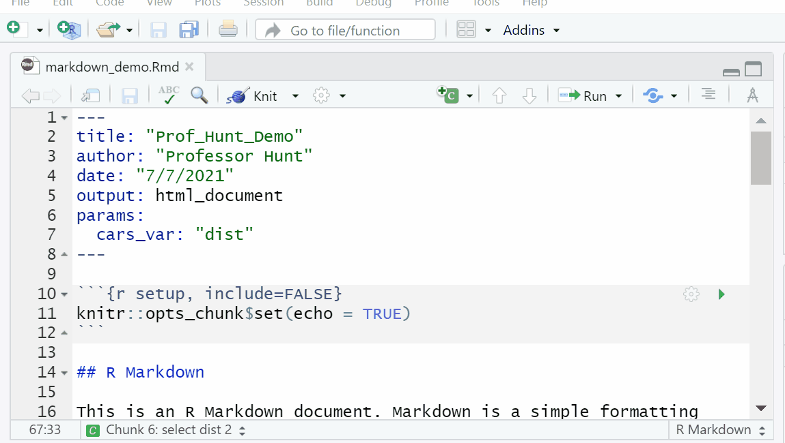

Module Objectives
- Discuss R/RStudio Basics
- Define RMarkdown and its uses
- Explain why a RMarkdown document would be helpful to accountants
- Demonstrate basic knowledge of RMarkdown syntax
Why R
R is an open-source statistical programming language and environment that has become a lingua franca for data science
R is popular in academia, and many commercial enterprises are exploring ways to use the tool more extensively, typically as a complement to commercial tools such as SAS
Open-source alternative to licensed statistical programming tools
Base R console
Thousands of community-developed packages with specialized functions
RStudio and other open-source GUI/IDEs
RGui and Rstudio

Getting Started
The best thing to do for this class is create a folder on your desktop. For example I have a folder called R projects on my desktop.
Next click file>New Project>New Directory>New Project
Browse to your desktop folder
Name the directory: ACC8143

RStudio
What are R Packages?
R packages extend the functionality of R by providing additional functions, data, and documentation. They are written by a worldwide community of R users and can be downloaded for free from the internet.
A good analogy for R packages is they are like apps you can download onto a mobile phone:

So R is like a new mobile phone: while it has a certain amount of features when you use it for the first time, it doesnt have everything. R packages are like the apps you can download onto your phone from Apples App Store or Androids Google Play.
Lets continue this analogy by considering the Instagram app for editing and sharing pictures. Say you have purchased a new phone and you would like to share a photo you have just taken with friends on Instagram. You need to:
Install the app: Since your phone is new and does not include the Instagram app, you need to download the app from either the App Store or Google Play. You do this once and youre set for the time being. You might need to do this again in the future when there is an update to the app.
Open the app: After youve installed Instagram, you need to open it.
Once Instagram is open on your phone, you can then proceed to share your photo with your friends and family. The process is very similar for using an R package. You need to:
Install the package: This is like installing an app on your phone. Most packages are not installed by default when you install R and RStudio. Thus if you want to use a package for the first time, you need to install it first. Once youve installed a package, you likely wont install it again unless you want to update it to a newer version.
Load the package: Loading a package is like opening an app on your phone. Packages are not loaded by default when you start RStudio on your computer; you need to load each package you want to use every time you start RStudio.
Errors, warnings, and messages
If the text starts with Error, figure out whats causing it. Think of errors as a red traffic light: something is wrong!
If the text starts with Warning, figure out if its something to worry about. For instance, if you get a warning about missing values in a scatterplot and you know there are missing values, youre fine. If thats surprising, look at your data and see whats missing. Think of warnings as a yellow traffic light: everything is working fine, but watch out/pay attention.
Otherwise, the text is just a message. Read it, wave back at R, and thank it for talking to you. Think of messages as a green traffic light: everything is working fine and keep on going!
What is RMarkdown?1
Overview
R Markdown provides an authoring framework for data science. You can use a single R Markdown file to both
- save and execute code
- generate high quality reports that can be shared with an audience
Installation
Like the rest of R, R Markdown is free and open source. You can install the R Markdown package from CRAN with:
install.packages("rmarkdown")
Once you have installed rmarkdown you can create a document

Notice that the file contains three types of content:
- An (optional) YAML header surrounded by
---s - R code chunks surrounded by
```s - text mixed with simple text formatting
- You can run each code chunk by clicking the
 icon. RStudio executes the code and display the results inline with your file.
icon. RStudio executes the code and display the results inline with your file.
Rendering output
To generate a report from the file, run the render command:
library(rmarkdown)
render("1-example.Rmd")Better still, use the Knit button in the RStudio IDE to render the file and preview the output with a single click. 
R Markdown generates a new file that contains selected text, code, and results from the .Rmd file. The new file can be a finished web page, PDF, MS Word document, slide show, notebook, handout, book, dashboard, package vignette or other format.
How it works

When you run render, R Markdown feeds the .Rmd file to knitr, which executes all of the code chunks and creates a new markdown (.md) document which includes the code and its output.
The markdown file generated by knitr is then processed by pandoc which is responsible for creating the finished format.
This may sound complicated, but R Markdown makes it extremely simple by encapsulating all of the above processing into a single render function.
Knowing the details is beyond this class, but the gist is that we can create documents with code and output. The facilitates reproducible reports.
Imagine having to generate the same reports each week/month from excel spreadsheets. To some extent you would have to add the formulas that you need to generate the numbers/summary stats you need for the report. BUT if your original report contained the necessary code to generate the desired output all you would have to do is update the data.
Code Chunks
You can quickly insert chunks like these into your file with
the keyboard shortcut Ctrl + Alt + I (OS X: Cmd + Option + I) the Add Chunk command in the editor toolbar or by typing the chunk delimiters {r} and.
When you render your .Rmd file, R Markdown will run each code chunk and embed the results beneath the code chunk in your final report.
Chunk Options
Chunk output can be customized with knitr options, arguments set in the {} of a chunk header. Above, we use five arguments:
include = FALSEprevents code and results from appearing in the finished file. R Markdown still runs the code in the chunk, and the results can be used by other chunks.echo = FALSEprevents code, but not the results from appearing in the finished file. This is a useful way to embed figures.message = FALSEprevents messages that are generated by code from appearing in the finished file.warning = FALSEprevents warnings that are generated by code from appearing in the finished.fig.cap = "..."adds a caption to graphical results.
Exercise #1
Answer the following questions. \(\color{red}{\text{Do not peek at the answers.}}\)
Add echo=FALSE to the following code in your rmarkdown file what happens?
```{r cars}
summary(cars)
```Answer

Add include=FALSE to the following code in your rmarkdown file what happens?
```{r cars}
summary(cars)
```Answer

Add a caption to the following code in your rmarkdown file.
```{r pressure, echo=FALSE}
plot(pressure)
```Answer

See the R Markdown Reference Guide for a complete list of knitr chunk options.
Global Options
To set global options that apply to every chunk in your file, call knitr::opts_chunk$set in a code chunk. Knitr will treat each option that you pass to knitr::opts_chunk$set as a global default that can be overwritten in individual chunk headers.
Caching
If document rendering becomes time consuming due to long computations you can use knitr caching to improve performance. Knitr chunk and package options describes how caching works and the Cache examples provide additional details.
Inline Code
Code results can be inserted directly into the text of a .Rmd file by enclosing the code with `r `.
copy the following code and add it to your default .Rmd file
# Inline Code example
```{r inline, include=FALSE}
cars_variable<-"dist"
#cars_variable<-"speed"
```
You can use the `<-` to store information in objects.
`object <- information`. The above code stores `r cars_variable` in cars_variable.
```{r select, message=FALSE}
library(dplyr)
cars%>%
select(c(paste(cars_variable)))
```
Code Languages
knitr can execute code in many languages besides R. Some of the available language engines include:
- Python
- SQL
- Bash
- Rcpp
- Stan
- JavaScript
- CSS
To process a code chunk using an alternate language engine, replace the r at the start of your chunk declaration with the name of the language. To connect to a data base first connect to the database using R code. See the following example:
CODE
```{r, echo=TRUE}
library(DBI)
db = dbConnect(RSQLite::SQLite(), dbname = "data/03-Data-file-classroom-exercise-Chinook_Sqlite.sqlite")
```OUTPUT
Next start your chunk with the declaration of the language.
CODE
```{sql, connection=db, echo=TRUE}
SELECT count(*)
FROM pragma_table_info("Customer")
```OUTPUT
SELECT count(*)
FROM pragma_table_info("Customer")| count(*) |
|---|
| 13 |
Note that chunk options like echo and results are all valid when using another language engine.
Learn more about using other languages with R Markdown in knitr Language Engines.
Parameters
R Markdown documents can include one or more parameters whose values can be set when you render the report.

Update your Rmd with
YAML CODE
Watch the spacing and placement
params:
cars_var: "dist"CODE
# Parameters
The YAML code above stores `r params$cars_var` in params$cars_var.
```{r select 2, message=FALSE}
library(dplyr)
cars%>%
select(c(paste(params$cars_var)))
```Declaring Parameters
Parameters are declared using the params field within the YAML header of the document. For example, the file above creates the parameter cars_var and assigns it the default value "dist".
Using Parameters in Code
Parameters are made available within the knit environment as a read-only list named params. To access a parameter in code, call params$<parameter name>.
Setting Parameters values
Add a params argument to render to create a report that uses a new set of parameter values. Here we modify our report to use the speed variable with
render("rmarkdown_demo.Rmd", params = list(cars_var = "speed"))Better yet, click the Knit with Parameters option in the dropdown menu next to the RStudio IDE knit button to set parameters, render, and preview the report in a single user friendly step.
Parameters are useful when you want to re-render the same report with distinct values for various key inputs, for example:
- Running a report specific to a department or geographic region.
- Running a report that covers a specific period in time.
- Running multiple versions of a report for distinct sets of core assumptions.
Learn more about parameters at Paramaterized Reports.
Tables
By default, R Markdown displays data frames and matrices as they would be in the R terminal (in a monospaced font). If you prefer that data be displayed with additional formatting you can use the knitr::kable function.

CODE
# Tables
**knitr kable**
```{r kable tables ,echo=FALSE, results='asis'}
library(knitr)
kable(head(cars,5),caption="Kable Table")
```
**default table**
```{r default tables, echo=FALSE}
head(cars,5)
```Note the use of the results='asis' chunk option. This is required to ensure that the raw table output isnt processed further by knitr.
Markdown Basics
Format the text in your R Markdown file with Pandocs Markdown, a set of markup annotations for plain text files. When you render your file, Pandoc transforms the marked up text into formatted text in your final file format.
| syntax | becomes | ||||||
|---|---|---|---|---|---|---|---|
plain text |
plain text | ||||||
|
End a line with two spaces to start a new paragraph |
||||||
*italics* and _italics_ |
italics and italics | ||||||
**bold** and __bold__ |
bold and bold | ||||||
superscript^2^ |
superscript2 | ||||||
~~strikethrough~~ |
|||||||
[link](www.rstudio.com) |
link | ||||||
# Header 1 |
Header 1 |
||||||
## Header 2 |
Header 2 |
||||||
### Header 3 |
Header 3 |
||||||
#### Header 4 |
Header 4 |
||||||
##### Header 5 |
Header 5 |
||||||
###### Header 6 |
Header 6 |
||||||
endash: -- |
endash: | ||||||
emdash: --- |
emdash: | ||||||
ellipsis: ... |
ellipsis: | ||||||
inline equation: $A = \pi*r^{2}$ |
inline equation: \(A = \pi*r^{2}\) | ||||||
image:  |
 |
||||||
horizontal rule (or slide break): *** |
horizontal rule (or slide break): |
||||||
> block quote |
|
||||||
|
|
||||||
|
|
||||||
|
|
Exercise #2
- Create an Exercise 2 heading in your Rmd file and give at least 5 examples of syntax (dont include any headers). Be sure and knit to check it.
Output Formats
Set the output_format argument of render to render your .Rmd file into any of R Markdowns supported formats. For example, the code below renders NAMEOFYOURFILE.Rmd to a Microsoft Word document.
library(rmarkdown)
render("NAMEOFYOURFILE.Rmd", output_format = "word_document")
If you do not select a format, R Markdown renders the file to its default format, which you can set in the output field of a .Rmd files header. The header of NAMEOFYOURFILE.Rmd shows that it renders to an HTML file by default.
The RStudio IDE knit button renders a file to the first format listed in its output field. You can render to additional formats by clicking the dropdown menu beside the knit button:
The following output formats are available to use with R Markdown.
Documents
html_notebook - Interactive R Notebooks
html_document - HTML document w/ Bootstrap CSS
pdf_document - PDF document (via LaTeX template)
word_document - Microsoft Word document (docx)
odt_document - OpenDocument Text document
rtf_document - Rich Text Format document
md_document - Markdown document (various flavors)
Presentations (slides)
ioslides_presentation - HTML presentation with ioslides
revealjs::revealjs_presentation - HTML presentation with reveal.js
slidy_presentation - HTML presentation with W3C Slidy
beamer_presentation - PDF presentation with LaTeX Beamer
powerpoint_presentation: PowerPoint presentation
More
flexdashboard::flex_dashboard - Interactive dashboards
tufte::tufte_handout - PDF handouts in the style of Edward Tufte
tufte::tufte_html - HTML handouts in the style of Edward Tufte
tufte::tufte_book - PDF books in the style of Edward Tufte
html_vignette - R package vignette (HTML)
github_document - GitHub Flavored Markdown document
You can also build books, websites, and interactive documents with R Markdown.
Output Options
Each output format is implemented as a function in R. You can customize the output by passing arguments to the function as sub-values of the output field.

To learn which arguments a format takes, read the formats help page in R, e.g.?html_document.
Assignment
Turn in an RMD file and a html file of your resume.
The information for this module is from RStudio